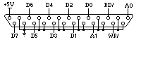

Le port cartouche ATARI Auteur: Sébastien FAVARD
|
|
Le port cartouche ATARI Auteur: Sébastien FAVARD
|
| INTRODUCTION
Dans des moments aussi froids,
où la neige tombe jour et nuit sous une tempête sibérienne
et que seul reste allumé votre Atari pour vous réchauffer,
je vais vous narrer quelques contes autour du port cartouche... sujet fort
intéressant, et en même temps assez vieux, puisque beaucoup
de personnes en ont déjà parlé. Cependant, quelques
explications rapides seront nécessaires avant d'attaquer le vif
du sujet, c'est-à-dire la réalisation d'une petite carte
se connectant dessus, facilitant son utilisation. De ce fait, les bidouilleurs
pourront plus rapidement, facilement et pour un coût moins élevé,
créer des cartes d'extensions.....
Le port cartouche est assez
spécial, puisqu'il n'a pas été conçu à
la base pour ajouter d'autres cartes d'extensions, mais plutôt comme
la philosophie Atari XL, d'origine console de jeux, afin de connecter des
cartouches (il porte finalement assez bien son nom :-D ), et notamment
la fameuse cartouche de diagnostic. Cependant, certains périphériques
ont réussi à utiliser ce port, comme par exemple ST Replay,
et profite pleinement de cet accès direct au bus du processeur.
PRESENTATION DU PORT
Le connecteur Atari permet d'enficher des circuits imprimés encartables, c'est-à-dire des cartes possédant une sorte de rangé de grosses pistes, afin de se glisser dans cet étrange connecteur. Il suffit de voir par exemple les cartouches de la Jaguar, ou ceux des XL, pour comprendre tout de suite la nature physique de ces cartes. Cependant, les concepteurs de chez Atari ont choisi un connecteur très rare, puisqu'il ne correspond pas aux différents standards actuels de pas de 2,54 mm ou 3,96 mm (séries 8607, 928, 908, 901...). De ce fait, il est assez difficile de créer une rallonge pour ce port cartouche (cf. ST Mag 121). Voilà donc pour la présentation, passons aux choses sérieuses... Le port cartouche est un connecteur encartable de 40 contacts, offrant une large gamme de signaux : - un bus de données
sur 16 bits ;
Port cartouche de l'Atari vue de face.
PRINCIPES D'UTILISATION
Puisque deux Chip Select
sont générés, et que seul un accès en lecture
est possible, sous peine de voir une magnifique erreur de bus survenir
(oh ! quelles jolies bombes), il suffit d'utiliser une des deux sorties
de décodage comme signal de validation de lecture, et l'autre comme
signal pour l'écriture. De ce fait, vous aurez "une" zone adressable
en lecture/écriture. Bien entendu, cela ne résout pas le
problème d'erreur de bus, mais alors il suffit d'utiliser les 8
bits de poids faibles du bus d'adresses comme bus de données pour
l'écriture et le tour est
Imaginons que
vous désirez envoyer une donnée DATA à un circuit
situé sur votre carte connecté au port cartouche, il suffit
de sélectionner le circuit (CS/ plus éventuellement un décodage
partiel des fils d'adresses A15-A8), puis de connecter les 8 fils
d'adresses faibles à ce circuit, et d'offsetter (pas très
français çà....) l'adresse du circuit suivant la donnée
DATA à transmettre, soit :
exemple en ASM (plus explicite qu'en langage évolué) :
d0.b contient la donnée à écrire avec l'octet haut
de d0.w à 0.
Cette instruction
effectue donc une lecture (donc aucune erreur de bus) à l'adresse
représentant le circuit, mais surtout en utilisant a0, soit l'adresse
identifiant une pseudo écriture. De ce fait, d0 est placé
sur les 8 bits de poids faible du bus d'adresses, puisque son octet fort
(de d0.w) est nul. La donnée peut donc ensuite être traitée
par ce circuit. Bien entendu, d1 ne sert à rien, et contiendra une
valeur absolument inutile puisque ne correspondant à "rien", c'est
pour cela que j'appellerai ce registre dummy. Cependant, j'en vois d'ici
ouvrir de grands yeux, et se dire que cela doit poser un problème
puisque le fil A0 du bus d'adresses de votre CPU préféré
n'existe pas.... Que neni, il suffit simplement de prendre en compte UDS/
et LDS/, finalement tout simplement en utilisant UDS/ comme fil A0 !!!
En effet, si vous accédez à une adresse paire, UDS/ = 0 et
si vous accédez à une adresse impaire, UDS/ = 1... donc ceci
est parfaitement compatible avec A0 ! Par contre, tout accès 16
bits ne pourra parfaitement remplir la tâche désirée,
car UDS/ = 0 et LDS/ = 0, ce qui obligera physiquement votre donnée
DATA à posséder le bit 0 à 0 !!!! même si vous
écrivez 15 par exemple ! De toute façon, cela serait stupide,
puisque votre donnée est sur le bus d'adresses, qui se fiche pertinemment
de connaître la taille utilisée du bus de données (qui
dans ce cas n'est pas utilisé sauf pour remplir
LA CARTE I/O 8 BITS
En fait, elle ne fait pratiquement rien, mais permet de plus facilement connecter des cartes à votre Atari, puisqu'elle exerce une sortie sur DB25. Le principe étant posé, vous pouvez même créer d'autres cartes, en par exemple, utilisant le bus 16 bits en lecture, ajouter d'autres fils d'adresses... Schéma de principe de la liaison.
|
Voyons la liste du matériel
nécessaire :
- petite perceuse
;
Celle-ci possède un bus de
données d'entrée/sortie sur 8 bits, deux fils d'adresses
et deux signaux de validation de lecture / écriture (cf. les CS/
du port cartouche). D'autre part, une tension d'alimentation +5V est prétiré
et des masses sont proposées un peu partout... En effet, cela permet
de posséder une meilleure isolation entre les signaux, si vous décidez,
par exemple, de mettre un câble d'1m80 entre votre ordinateur et
votre carte électronique ! Ne rigolez pas, mais le kit de Roine
par exemple ne permet pas ce genre de distance, et cela pose d'énormes
SPECIFICATIONS FONCTIONELLES

CIRCUIT IMPRIME
Maintenant terminons sur la liste des composants nécessaires pour réaliser le montage : - un DB25 non
coudé (fiche mâle conseillé pour laisser la fiche femelle
à la carte d'extension) (15 Frs) ;
Soit un coût global de 40
Frs, sans compter le tirage de la carte. Essayez de le faire sur un petit
morceau d'époxy (plaque), car si vous utilisez une carte format
simple Europe par exemple (l'on peut mettre 6 cartes I/O dessus !), le
coût sera d'environ 60 Frs, donc d'un rapport de 10 Frs par carte...
si vous êtes en groupe ;-). Lorsque vous placerez la carte à
l'intérieur du capot, faites suffisamment ressortir la partie connectique
encartable afin que vous puissiez bien l'enficher dans le connecteur port
cartouche ! Sinon, lorsque vous essaierez de fixer cette "clef" sur votre
port d'extension, si vous ne sentez pas beaucoup de résistance lorsque
vous l'enficher, mettez de la soudure sur la partie connectique de la carte
afin que celle-ci soit "écrasée" (pas trop tout de même)
à l'intérieur du connecteur Atari. Ceci évitera une
éventuelle mobilité accidentelle de la carte et donc de causer
un défaut durant son utilisation voire même une erreur de
bus. En fait, cela dépend toujours du type de plaque que vous utiliserez
pour votre tirage, puisque les épaisseurs sont variables.
Pour en revenir au circuit imprimé,
afin de ne pas se tromper de sens pour les circuits intégrés,
il suffit de les souder de façon à ce que leur patte 1 (haut
à gauche des circuits) soit sur la pastille en forme carré
! Pour ce qui est du DB25, enfichez la carte I/O entre les broches du connecteur,
puis souder les. Si la taille de la carte est un peu juste, vous pouvez
mettre des fils afin d'augmenter la distance. De plus, deux vias (percées)
proche de U2 devront être percées comme pour les pastilles
des composants. Alors, il vous faudra mettre un morceau de patte de condensateurs
de votre carte, afin de faire la liaison entre les deux faces (exactement
le même principe que pour les composants, sauf que vous devez mettre
une patte d'un circuit virtuel en fait). D'une fàçon similaire,
mettez un strap (patte de résistance ou condensateur) entre la patte
1 du buffer de droite (U1) et le via juste en dessous près du connecteur
cartouche. Bien entendu, vous serez obliger de souder l'extrémité
du strap sur la patte de votre circuit. Pour terminer, à gauche,
près du connecteur DB25, se situent 10 autres vias nécessaires
pour relier les masses entre elles, donc utilisez de même 10 autres
morceaux de pattes de condensateurs, résistances (ou autres)...
Ceci vous évite de placer des fils entre les broches reliées
à la masse et permet d'éventuelles modifications comme ajout
de fils d'adresses...
Attention, cette image n'est forcément
pas à l'échelle réelle, ce qui vous oblige soit à
refaire le routag( solution pénible), ou alors utilisez un bon logiciel
de dessin, afin de remettre cette image à la taille réelle
(pour l'impression). Il suffit de considérer comme point de repère
des pastilles en rangées verticalles. Alors, débrouillez
vous pour que la distance entre deux centres de pastilles verticales soit
de 2.54mm ! Les pastilles, sur le dessin sont réalisées par
des "carrés" de 3*3 pixels noirs, ce qui vous facilitera la tâche...
Pour toutes questions, vous pouvez
me contacter à mon adresse
e-mail, favard@linux.utc.fr
|